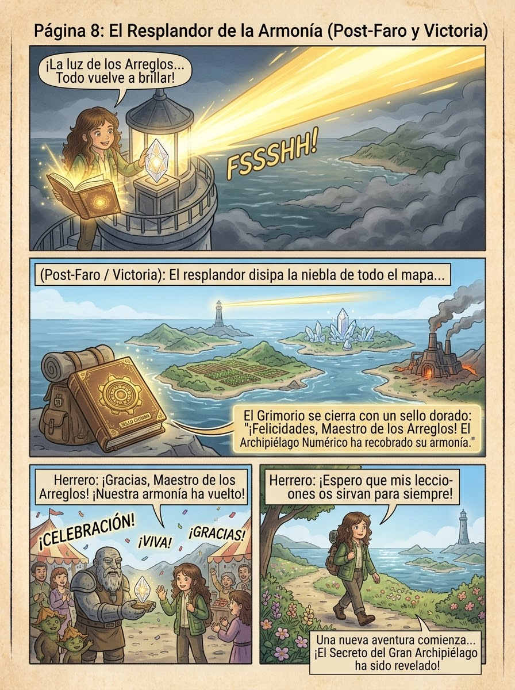

El Secreto del
Gran Archipiélago
Una aventura de multiplicaciones
Hace mucho tiempo, el Archipiélago Numérico vivía en perfecta armonía… hasta que la Niebla de los Restos de Olvido desordenó sus cultivos, sus cristales y sus construcciones. Solo una aprendiz de exploradora con el Grimorio de los Arreglos puede restaurar el equilibrio.
Texto de la página...
El Archipiélago Numérico
Toca una isla despejada para continuar tu aventura
🌱 Isla de la Semilla
Reparte 12 semillas en 4 surcos iguales
🌬️ El Puente Colgante
Tu exploradora cruza el puente poco a poco. Cuando aparezca la señal de viento fuerte, mantén presionado el botón (o la barra espaciadora) para que se sujete bien fuerte. ¡Cuando el viento se calme, seguirá avanzando sola!
🔮 Templo de los Espejos
3 × 5
5 × 3
Toca las casillas vacías del lado derecho hasta llenarlo por completo
🌀 El Laberinto de Piedra
Usa las flechas o los botones para guiar a tu explorador hasta la salida ⚒️
⚒️ Forja de los Elementos
Forja: 7 × 8
¿Cuánto da ?
🚤 Mar de las Rocas Flotantes
Usa las flechas ◀ ▶ o los botones para esquivar los obstáculos y llegar al faro
🏮 El Faro del Cristal Mayor
6 × 7 = ?

¡La niebla se ha disipado!
El Cristal Mayor vuelve a brillar y su luz recorre todo el Archipiélago Numérico. Los cultivos florecen, los cristales cantan y las construcciones se ordenan solas. ¡Gracias a ti, la armonía numérica ha vuelto para siempre!
Has demostrado que dominas las multiplicaciones como una verdadera Maestra Exploradora del Archipiélago. 🌟